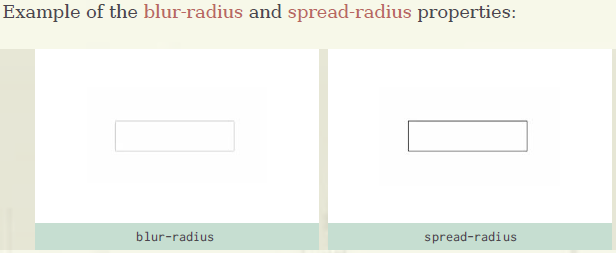
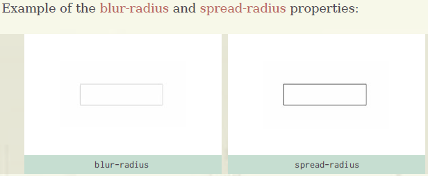
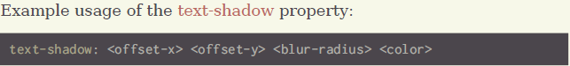
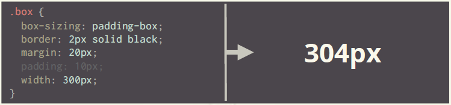

Border Radius
The border-radius property applies rounded corners to borders.
.box
.box longhand version
.box shorthand version
.box varied sides
.box percentages
Box-Shadow
.box .box-shadow
box-shadow: inset | offset-x | offset-y | blur-radius | spread-radius | color
- inset (optional)
- If it is not specified (which is the default), a drop shadow is created, rather than an inset shadow.
- offset-x
- The shadow offset x (left/right) value.
- offset-y
- The shadow offset y (up/down) value.
- blur-radius (optional)
- The blur-radius alters the amount of shadow, causing it to become bigger and lighter (with a larger value).
- spread-radius (optional)
- The spread-radius causes the shadow to expand or shrink.
- color (optional)
- The color of the shadow.

What if we wanted the blur-radius value to instead be the spread-radius?
 

Text Shadow
I have a shadow!
Box Model Refresher
- The CSS box model references the design and layout of given HTML elements
- Each HTML element is a “box”, which consists of margins, borders, padding, and the content of the element
- The “box model” refers to how those properties are calculated in conjunction with one another in order to set the element’s dimensions
Calculating the width of .box-model
.box {
border: 2px solid black;
margin: 20px;
padding: 10px;
width: 300px;
}
Box Sizing
The box-sizing property is used to change the default CSS box model, which is used to calculate widths and heights of given elements.
There are 3 different values for box-sizing:
- content-box
- padding-box
- border-box
content-box
This is the default value. The width and height are measured by including only the content, but not the border, margin, or padding.
padding-box
The width and height include the padding, but do not include the border or margin.
border-box
The width and height include the padding and border, but not the margin.
Multiple Backgrounds
CSS3 allows you to apply multiple backgrounds to an element. They are stacked in the order in which you apply them.
First, specify your background-images in a comma-delimited list:
.element {
background-image: url(bg1.png), url(bg2.png);
}
Then specify the background-position for each, in order
.element {
background-image: url(bg1.png), url(bg2.png);
background-position: top left, center right;
}
Finally, specify the background-repeat for each:
.element {
background-image: url(bg1.png), url(bg2.png);
background-position: top left, center right;
background-repeat: no-repeat, no-repeat;
}
You can also use the shorthand background:
.element {
background:
url(bg1.png) top left no-repeat,
}
You can also use the shorthand background:
.element {
background:
url(bg1.png) top left no-repeat,
url(bg2.png) center right no-repeat;
}
Color
CSS3 provides multiple ways to work with color:
- RGBa
- HSLa
RGBa
RGB represents the 3 additive primary colors, red, green, and blue. In CSS3, we can also pass the alpha value (the “a” in RGBa), which represents the opacity of a color.
Example usage of rgba:
.element {
color: rgba(0, 0, 0, 0.75);
}
HSLa
CSS3 also adds HSLa (Hue, Saturation, Lightness). In addition to providing the hue, saturation, and lightness values, you can specify the alpha value for the opacity of the color.
Example usage of hsla:
.element {
color: hsla(240, 100%, 50%, 0.75);
}
Opacity
CSS3 allows you to specify the opacity of an element using the opacity property.
.element {
opacity: 0.45;
}
Gradients
Linear Gradient
To create a linear gradient, we need to specify the starting point, the ending point, and optional stop-color points.
.element {
background: linear-gradient(to bottom, red, yellow);
}
Radial Gradient
A radial gradient, unlike a linear gradient, creates a gradient that extends from an origin, the center of the element, extending outward in a circular or elliptical shape.
A radial-gradient consists of: the center,the ending shape contour and position, color stops.
.element {
background: radial-gradient(circle at top left, aqua, blue);
} /* circle or ellipse */